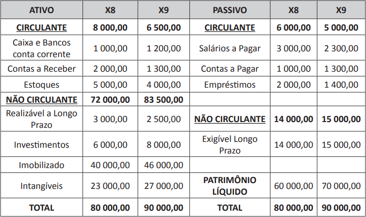

Balanço Patrimonial da Cia. Alfa no exercício findo em 31/12/X9 em R$

Com base na Análise vertical e horizontal e na Análise dos indicadores de liquidez do Balanço Patrimonial
apresentado, avalie as afirmações a seguir acerca do que se verifica em X9.
-
A conta de Empréstimos diminuiu 30%.
-
O total das Origens de Recursos aumentou 16,67%.
-
O CCL – Capital Circulante Líquido – é de R$ 1 500,00.
-
O ILS – Índice de Liquidez Seca – é de 0,50.
-
O ILC – Índice de Liquidez Corrente – é de 1,23.
-
O ILG – Índice de Liquidez Geral – é de 0,55.
É correto apenas o que se afirma em
-
I, II e VI.
-
I, III e IV.
-
II, V e VI.
-
I, III, IV e V.
-
II, III, IV, V e VI.